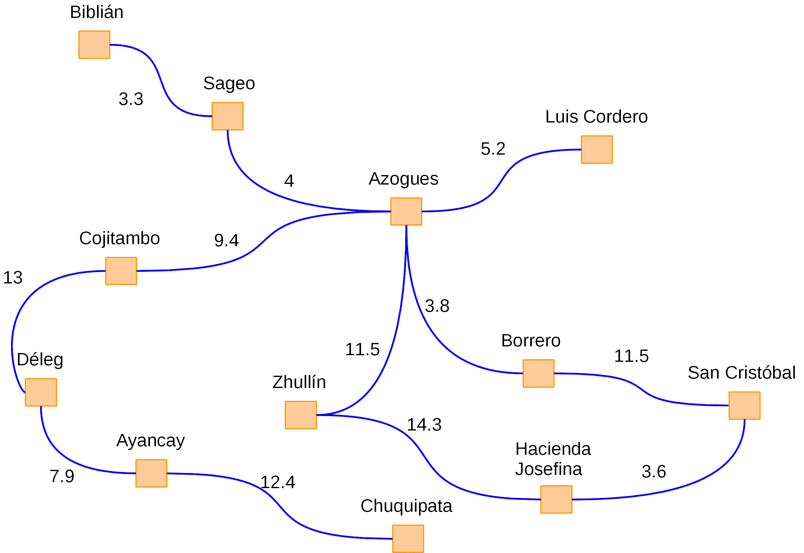

Los métodos de búsqueda "no informados" o "sin razonamiento" no poseen información adicional sobre los estados además de la que se provee en la definición del problema. Es por ello que estos métodos generarán una serie de estados sucesores hasta que puedan encontrar el estado objetivo (Ertel, 2017).
A continuación veamos un problema que definido en la problemática de "buscar la mejor ruta en un mapa". Como se puede observar en la siguiente ilustración de algunos sectores de la Provincia del Cañar, tenemos definidas las distancias (en kilómetros) entre determinados sitios de interés:

Con ello, se busca la encontrar la mejor ruta de un punto inicial dado a un punto objetivo. El esquema propuesto se define de la siguiente manera (Ertel, 2017):
- Estado: punto de interés o ciudad donde el viajero se encuentra actualmente.
- Estado inicial: un punto de interés o ciudad de partida que se define de forma arbitraria.
- Estado objetivo: un punto de interés o ciudad arbitrario.
- Acciones: viajar de un punto de interés o ciudad a otra empleando las conexiones existentes.
- Función de coste: es la distancia de un punto a otro. Cada acción se corresponde a un eje en el grafo con una distancia como peso.
- Espacio de estados: todas las ciudades o puntos de interés (nodos) del grafo.
Por ejemplo, si deseamos ir desde el punto "Sageo" hasta la "Hacienda Josefina", existen diferentes caminos. La idea consiste en encontrar el camino que represente un menor coste. Por ejemplo, para ir de "Biblián" a "Azogues", el costo de la ruta será el siguiente:
Supongamos ahora que se nos proporciona la siguiente meta:
- Estado inicial: Azogues
- Estado objetivo: Hacienda Josefina
- Objetivo: encontrar la ruta más corta en término de pasos (cuántos saltos da de un nodo a otro) y en términos de costo de ruta (distancia en kilómetros).
Para resolver el problema, vamos a utilizar 3 técnicas de búsqueda que se detallarán seguidamente:
- Búsqueda por amplitud
- Búsqueda por el menor costo
- Búsqueda por profundidad
Finalmente, es importante considerar que este tipo de problemas generalmente se representa a través de un grafo. Para este caso los nodos representan ciudades o puntos de interés, mientras que los arcos (líneas que unen 2 nodos) son los caminos que existen entre 2 ciudades o puntos de interés.
Debe tomar en cuenta que los arcos (o caminos) pueden ser de dos tipos (básicamente):
- No dirigidos: indica que se puede ir tanto del nodo "A" al "B", como del nodo "B" al "A" (camino bi-direccional):
- Dirigidos: especifica que existe un solo camino (o bien se va de "A" a "B" o viceversa):